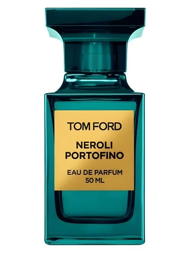

Neroli Portofino
- Unisex
- Familia cítrica
- Lanzado en 2011
- Ideal para primavera y verano
Con caja$2,500Te lo conseguimos en 2 días a 1 semanaSin caja$950Te lo conseguimos en 2 días a 1 semana
No disponible: te lo conseguimos en 2 días a 1 semana
Cómo huele
Cítrico
Floral blanco
Especiado fresco
Aromático
Sus notas
Salida
bergamotanaranja mandarinalimónnaranja amargalavandaromeromirto
Corazón
flor de naranjo africananerolijazmínpittosporo
Fondo
ámbarangélicaambrette (malva almizclera)
Neroli Portofino de Tom Ford es un perfume cítrico para mujer y hombre, lanzado en 2011. Abre con bergamota y naranja mandarina, en el corazón tiene flor de naranjo africana y neroli y deja un fondo de ámbar y angélica. Lo que más se siente: cítrico, floral blanco y especiado fresco.